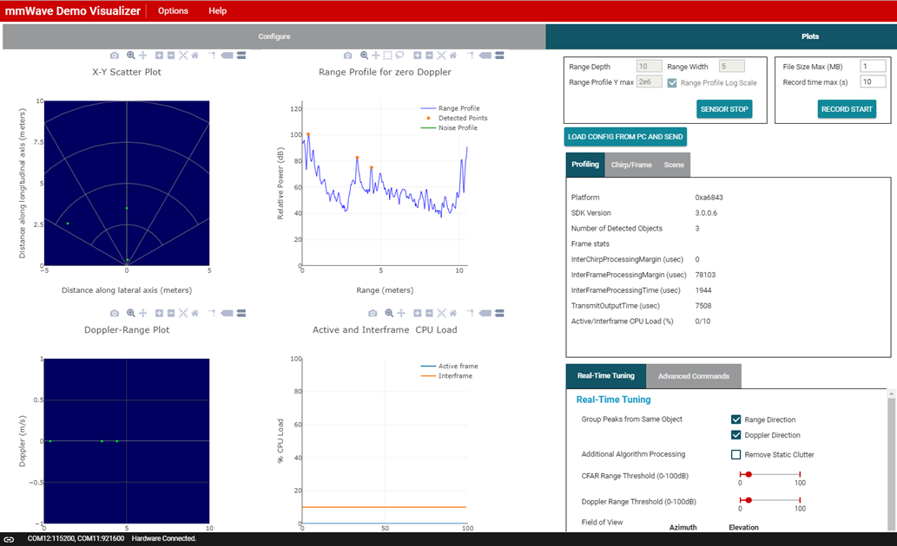
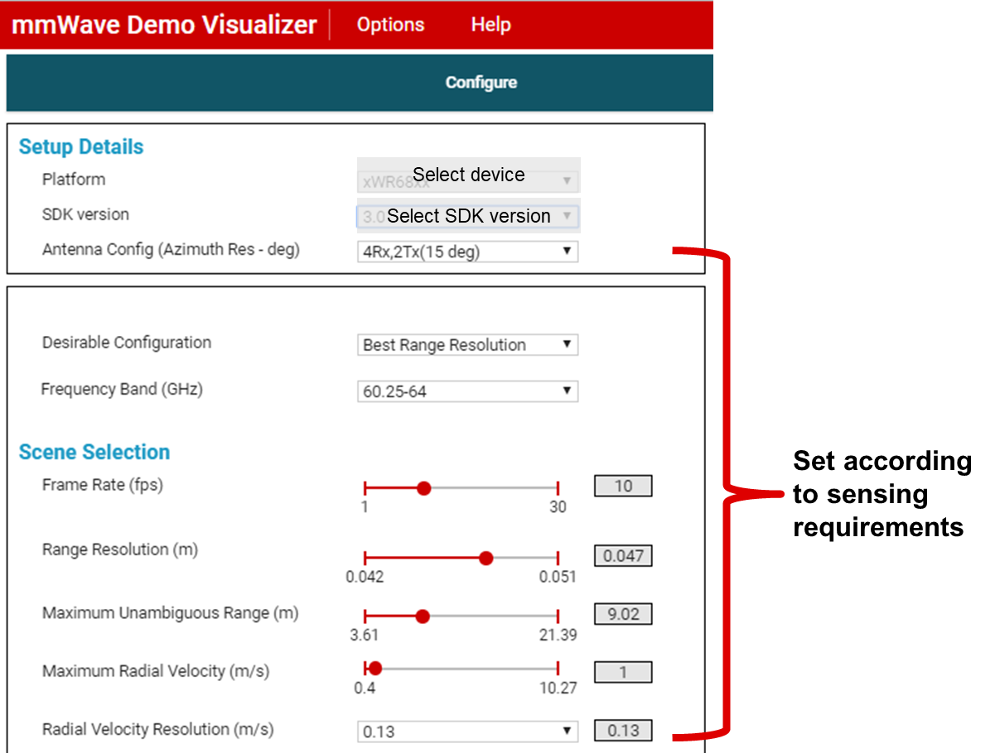
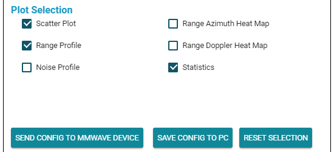
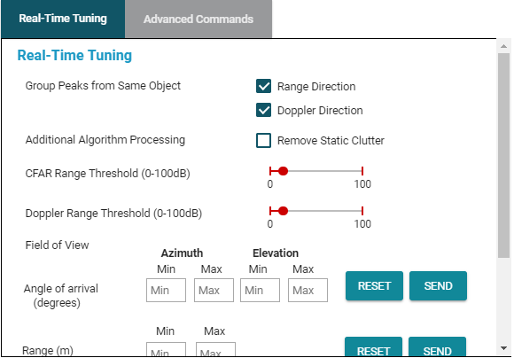

# Overview of MMWAVE SDK Out Of Box Demo
This is the mmWave SDK out-of-box demo lab for the TI mmWave EVM's. Run this
Out-Of-Box Demo to view processed TI mmWave sensor data in configurable plots
using the web-based mmWave Demo Visualizer.
**NOTE**: This version of the SDK out-of-box demo is for IWR68xx EVM and uses both the on-chip Hardware Accelerator (HWA) and on-chip c674x DSP.

---
# EVM Compatibility
This demo supports most current mmWave EVM's available currently. Below are
the currently supported devices
Device | Supported EVM's
--------------------|-----------------
xWR1443 | [xWR1443BOOST](https://www.ti.com/tool/IWR1443BOOST)
xWR1642 | [xWR1642BOOST](https://www.ti.com/tool/IWR1642BOOST)
xWR1843 | [xWR1843BOOST](https://www.ti.com/tool/IWR1843BOOST)
xWR6443 | [xWR6443 Devices](https://www.ti.com/tool/IWR1443BOOST) and xWR6843 EVM's for usage without the onboard DSP
xWR6843 | [xWR6843ISK](https://www.ti.com/tool/IWR6843ISK), [xWR6843ISK-ODS](https://www.ti.com/tool/IWR6843ISK-ODS), and [xWR6843LEVM](https://www.ti.com/tool/IWR6843LEVM) <br> For the IWR6843LEVM, follow docs and configuration for the IWR6843ISK. The setup is the same.
xWR6843AOP | [xWR6843AOPEVM](https://www.ti.com/tool/IWR6843AOPEVM)
---
# Quickstart
## Requirements
* Latest version of [Uniflash](https://www.ti.com/tool/UNIFLASH) or use the [Cloud version](https://dev.ti.com/uniflash/#!/)
## 1. Configure the EVM for Flashing Mode
Follow the steps in the [EVM Setup Guide](../../../docs/hardware_guides/evm_setup_operational_modes.html)
for your specific EVM.
## 2. Flash the EVM using Uniflash
Flash the appropriiate binary from the prebuilt binaries folder using
UniFlash. Follow the instructions for [using UniFlash](../../../docs/software_guides/using_uniflash_with_mmwave.html)
Prebuilt binaries can be found in the following directory:
`<INDUSTRIAL_TOOLBOX_INSTALL_DIR>\mmwave_industrial_toolbox_<VER>\Out_Of_Box_Demo\prebuilt_binaries\`
## 3. Configure the EVM for Functional Mode
Follow the steps in the [EVM Setup Guide](../../../docs/hardware_guides/evm_setup_operational_modes.html)
for your specific EVM.
## 4. Open the mmWave Demo Visualizer
In google chrome, open the [mmWave Demo Visualizer](https://dev.ti.com/mmWaveDemoVisualizer)
If prompted, follow the on-screen instructions for installing TI Cloud
Agent
The [People Counting visualizer](../../People_Counting/visualizer/docs/people_counting_visualizer_user_guide.html) is also compatible with the Out Of Box Demo. It is a python gui which can be used locally. It can be found under `{Toolbox_install_dir}/labs/People_Counting/visualizer`
## 5. Connect the Visualizer to the Device
In the GUI menu, select Options → Serial Port
* In the serial port window, enter the appropriate port in each of the
drop down menus based on your port numbers from [Uniflash](#flash_the_evm_using_uniflash)
section
* Click on Configure to connect the GUI to the EVM. The GUI Status bar
should show **Conected:**
## 6. Running the Demo
* On the Configure Tab, select the appropriate mmWave SDK and the **xWR68XX device** from the Platform dropdown menu
* Use the available sliders to create the desired configuration.
* You can also use the presets available in the Desirable Configuration drop-down list.
* Additional details about the configuration parameters can be found in the
[mmWave Demo Visualizer User Guide](http://www.ti.com/lit/pdf/swru529)

* Select the desired plots under Plot Selection (e.g. Scatter Plot, Range Azimuth Plot)
* When ready to send the configuration, click on Send Config To mmWave Device

* Click on the Plots tab to view the plots that were selected to be shown
* Move a highly reflective object in front of the EVM and see how the demo responds.
* You can use the Real Time Tuning controls shown below to adjust
CFAR thresholds, Modify Field of View and enable or disable Peak
grouping in real time.

---
# Developer's Guide
## Build the Firmware from Source Code
### 1. Software Requirements
Tool | Version | Download Link
----------------------------|---------------------------|--------------
TI mmWave SDK | 3.5.x.x (6843, 6443, and 1843)</br> 2.1.x.x (1443) </br> 2.0.x.x (1642)| [Latest mmWave SDK](https://www.ti.com/tool/MMWAVE-SDK) </br>[Previous Versions](https://www.ti.com/tool/download/MMWAVE-SDK#previous-versions)
Code Composer Studio | Latest | [Code Composer Studio](https://www.ti.com/tool/CCSTUDIO)
mmWave Industrial Toolbox | Latest | [mmWave Industrial Toolbox installation instructions](../../../docs/readme.html)
### 2. Import Lab Project
The mmWave SDK Out-of-box demo Lab CCS Project is available on TI
Resource Explorer under mmWave Sensors → mmWave Industrial Toolbox.
You can import the project in your CCS workspace using TI Resource
Explorer in CCS or by importing the projectspec from a local copy of
the toolbox. Both methods of importing projects are defined below.
To get started, open CCS and set up your workspace as desired.
[[+d Expand for details on importing via TI Resource Explorer in CCS
* In the top toolbar, navigate to **View → Resource Explorer**
* In the **Resource Explorer** side panel (not the main panel with "Welcome to.."),
navigate to **Software → mmWave Sensors → Industrial Toolbox - <ver> → Labs →**
* Select the Out Of Box Demo, and then choose the appropriate project for
your specific device or EVM
* Click on the project, which should open the project in the right main
panel, and then click on the Import to IDE button
<img src="../../../docs/images\import_ide_icon.png" width="40"/>.
+]]
[[+d Expand for details on importing via CCS Import Projectspecs
* In the top toolbar, navigate to **Project → Import CCS Projects...**
* With the **Select search-directory** option enabled, click **Browse...**,
navigate to the **Out_Of_Box_Demo** folder at `C:\ti\<mmwave_industrial_toolbox_install_dir>\labs\Out_Of_Box_Demo\`
and then click **OK**.
* Under **Discovered projects**, select the appropriate project for your device or EVM then click **Finish**.
+]]
[[b! Project Workspace
When importing projects to a workspace, a copy is created in the workspace.
It is important to note that the copy in user's workspace is the one that
gets built and all modifications will only be implemented for the workspace
copy. The original project downloaded in mmWave Industrial Toolbox is not modified.
]]
### 3. Build the Lab
#### **Build DSS Project**
If the applicable demo for your device utilizes the DSP, then it
will contain a DSS project as well as an MSS project the DSS project
must be built before the MSS project.
With the DSS project selected in **Project Explorer**, right click
on the project and select **Rebuild Project**. Selecting **Rebuild**
instead of **Build** ensures that the project is always re-compiled.
This is especially important in case the previous build failed with errors.
Ensure that the DSS project builds without errors, which will be
shown in the console window.
#### **Build MSS Project**
Select the MSS project in **Project Explorer**, right click on the
project and select **Rebuild Project**.
[[r! Build Fails with Errors
If the build fails with errors, please ensure that all the [prerequisites](#software)
are installed as mentioned in the previous steps.
]]
### 4. Execute the Lab
There are two ways to execute the compiled code on the EVM:
* **Deployment mode**: In this mode, the EVM boots autonomously from flash and starts running the bin image
* Using Uniflash, flash the **.bin** file from the MSS project
(typically in the **Debug** folder, but the folder name will
depend on the project's configuration)
* The procedure to flash the EVM is the same as detailed in the
[Flash the EVM](#flash_the_evm_using_uniflash) section.
* **Debug mode**: This mode is is used for downloading and running the
executable (.xer4f and .xe674) from CCS. This mode enables JTAG connection
with CCS while lab is running; useful during development and debugging.
## CCS Debug Mode
Follow the instructions for [Using CCS Debug for Development](../../../docs/software_guides/using_ccs_debug.html)
## Output from mmWave Demo Visualizer and Output using DCA1000EVM
The mmWave Demo Visualizer is used to visualize processed output data
from the mmWave radar device. This processed output data can be saved
in binary form to a .DAT file. Additionally, raw ADC data can be saved
for offline processing using the [DCA1000 EVM](https://www.ti.com/tool/DCA1000EVM).
To learn more about the structure of this output data please refer to the following resources:
[[b! Output Data versus Raw ADC Data
Output data refers to point cloud data (x,y,z,v). Raw ADC data refers to digitally sampled sensor data.
]]
* Output Data Structure Information:
* `<MMWAVE_SDK_INTSALL_DIR>\packages\ti\demo\xwr68xx\mmw\docs\doxygen\html\index.html`
* How to use the [DCA100EVM](https://www.ti.com/tool/DCA1000EVM) for raw data capture:
* `<MMWAVE_SDK_INTSALL_DIR>\docs\mmwave_sdk_user_guide.pdf` <br>Section 3.3.2 mmWave Demo with LVDS-Based Instrumentation
* Parsing Script Information for mmWave Demo Visualizer
* `<MMWAVE_SDK_INTSALL_DIR>\docs\mmwave_sdk_user_guide.pdf` <br>Section 3.3.1 mmWave Demo - Advanced GUI Options
* Parsing Script Location for mmWave Demo Visualizer and [DCA100EVM](https://www.ti.com/tool/DCA1000EVM) for raw data capture:
* `<MMWAVE_SDK_INTSALL_DIR>\packages\ti\demo\parser_scripts`
Need More Help?
===========
* Additional resources in the documentation of the mmWave SDK (note hyperlinks will only work if the mmWave SDK has been installed on PC):
* [mmWave SDK User's Guide located at `<mmwave_sdk_install_dir>/docs/mmwave_sdk_user_guide.pdf`](http://software-dl.ti.com/ra-processors/esd/MMWAVE-SDK/latest/exports/mmwave_sdk_user_guide.pdf)
* [mmWave SDK Release Notes located at `<mmwave_sdk_install_dir>/docs/mmwave_sdk_release_notes.pdf`](http://software-dl.ti.com/ra-processors/esd/MMWAVE-SDK/latest/exports/mmwave_sdk_release_notes.pdf)
* Search for your issue or post a new question on the [mmWave E2E forum](https://e2e.ti.com/support/sensor/mmwave_sensors/f/1023)